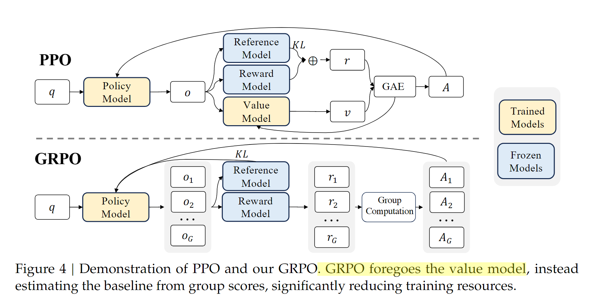

LLM强化学习算法详解
概述
学习路线
前言
一些概念
策略梯度（Policy Gradient）
“策略梯度”（Policy Gradient）是强化学习中最核心的一类方法，它直接通过优化策略的参数来最大化期望回报。下面进行详解：
一、基本思想
在强化学习中， 策略（Policy） 定义了智能体（Agent）在环境中行动的方式。
如果我们用一个带参数的函数（如神经网络）表示策略：
表示在状态 s 下采取动作 a 的概率，参数为 θ。
策略梯度法的核心目标是：
找到一组参数 θ，使得模型获得的期望累积奖励最大。
这其实与深度学习中的最小化Loss有异曲同工之妙
二、优化目标与梯度推导
定义目标函数（期望回报）为：
其中 R\(τ\) 是一条轨迹（trajectory）上获得的总奖励。
使用概率论的对数导数技巧（log trick）：
这就是 策略梯度定理（Policy Gradient Theorem） 的核心结果。 它告诉我们：只要能从策略中采样（而不需要知道环境的导数），就能计算梯度。
对数导数技巧：∇logf(x) = ∇f(x) / f(x)，即∇f(x) = f(x) * ∇logf(x) ，具体推导过程如下：
设一条长度为 T 的轨迹为
τ=(s0,a0,s1,a1,…,sT)，累计回报为 R\(τ\)（可包含折扣）。
在给定策略参数 θ 下，轨迹的概率密度函数可写为
其中 ρ 是初始状态分布，环境转移 P 不依赖 θ（典型假设）。
于是：
对目标函数求梯度（找到使目标函数上升最快的方向）：
展开\(log p_\theta(\tau)\) 并去掉与 θ 无关项
由于 \(\rho\),P 与 θ 无关，则
因此：
把期望写成对状态—动作采样的期望，也常见到压缩写法，理解为沿着同一条轨迹对所有时刻求和。
REINFORCE
REINFORCE（Williams, 1992，Simple statistical gradient-following algorithms for connectionist reinforcement learning - Machine ）是最早、最经典的Policy Gradient方法之一。 它通过采样轨迹并利用梯度上升直接优化策略参数，而不依赖环境的模型或显式的值函数。
核心思想
REINFORCE 的核心思想是：
通过采样得到带有高回报的动作，并增加其在策略中的概率，同时降低带来低回报的动作的概率。
数学上，通过对 J\(θ\) 求导可得策略梯度定理（Policy Gradient Theorem）：
-
其中\(G_t=\sum_{k=t}^{T-1} \gamma^{k−t} r_{k+1}\)是从时间步 t 开始的折扣回报,可以理解为“从当前状态出发，未来能得到的总奖励”；
-
\(r_t\)是在时间步 t 获得的即时奖励，通常由环境给定（基于游戏规则）
-
\(\gamma \in [0,1] 是折扣因子\)
-
T：回合的结束时间步（终止状态）
算法步骤
REINFORCE 算法的参数更新公式是：
或者with baseline版本：
其中：
-
\(\theta\)表示策略参数；
-
\(\alpha\)表示学习率；
-
\(\pi_\theta (a_t | s_t)\)表示策略在状态\(s_t\)下选择动作\(a_t\)的概率；
-
\(G_t\)表示回报信号（指导方向）；
-
\(b\)表示减去的baseline，用于降低方差，可以用时间步\(t\)下的平均回报作为baseline
🙌举个例子：CartPole 平衡杆任务
环境（来自 OpenAI Gym 的经典例子）：
-
状态 \(s_t\)：由 4 个连续变量组成（位置、速度、杆角度、角速度）。
-
动作 \(a_t\)：离散动作 {左推, 右推}。
-
奖励 \(r_t\)：每成功保持平衡一步就得到 +1；杆倒下或小车移出界面时，回合结束。
我们假设使用一个参数化策略网络（policy network）输出左右动作的概率。
Step 1：初始化
初始化策略参数 θ
设学习率 α = 0.01
设折扣因子 γ = 0.99
Step 2：采样一条完整轨迹
我们从环境中按照当前策略运行一个 episode：
| 时间步 t | 状态 s_t | 动作 a_t | 奖励 r_t |
|---|---|---|---|
| 0 | s₀ | 向右 | +1 |
| 1 | s₁ | 向右 | +1 |
| 2 | s₂ | 向左 | +1 |
| 3 | s₃ | 向左 | +1 |
| 4 | s₄ | 向右 | +1 |
| 5 | s₅ | — | （杆倒下，回合结束） |
此时 episode 长度 T = 5，总奖励 5。
Step 3：计算每个时间步的累计回报 G_t
公式：
计算结果：
| t | 奖励序列 | 折扣累计回报 \(G_t\) |
|---|---|---|
| 0 | 1 + 0.99×1 + 0.99²×1 + 0.99³×1 + 0.99⁴×1 | 4.90 |
| 1 | 1 + 0.99×1 + 0.99²×1 + 0.99³×1 | 3.94 |
| 2 | 1 + 0.99×1 + 0.99²×1 | 2.97 |
| 3 | 1 + 0.99×1 | 1.99 |
| 4 | 1 | 1.00 |
Step 4：计算每步的策略梯度
对于每个时间步 (t)，计算梯度：
这表示：
如果某动作获得的累计回报高（即 \(G_t\) 大），则增加该动作在该状态下的概率。
如果 \(G_t\) 小（甚至负），则减少该动作的概率。
实际操作中，这个梯度由神经网络的反向传播自动计算。
Step 5：策略参数更新
把所有时间步的梯度加起来并更新参数：
这一步完成一次完整的 REINFORCE 迭代（Episode Update）。
-
在实际训练中，会运行多条轨迹（batch of episodes），
-
对每条轨迹求平均梯度，
-
然后一起更新策略参数。
Step 6：重复迭代，直到收敛
整个训练过程循环执行：
-
采样轨迹；
-
计算 \(G_t\)；
-
计算梯度；
-
更新策略；
-
测试效果。
随着迭代次数增加：
-
小车平衡的时间越来越长；
-
最终能维持数百步甚至永久平衡；
-
策略网络学会了在不同角度下自动调整推力方向。
Step 7：算法流程总结
初始化策略参数 θ
while 未收敛:
从环境采样一条完整轨迹 τ = (s₀, a₀, r₀, s₁, a₁, r₁, …)
对每个时间步 t:
计算累计回报 G_t = Σ_{k=t}^{T-1} γ^{k-t} r_k
计算梯度 g_t = ∇θ log πθ(a_t | s_t) * G_t
θ ← θ + α * Σ_t g_t
🧾 八、直观理解总结
| 概念 | 含义 | 举例 |
|---|---|---|
| \(r_t\) | 当前动作获得的即时奖励 | 成功保持平衡得 +1 |
| \(G_t\) | 从当前时刻起未来累计回报 | 预测动作的“长期好处” |
| \(\log \pi_\theta(a_t \mid s_t)\) | 动作的概率对数 | 策略网络的输出 |
| 更新规则 | 增强高回报动作概率 | 学会更好的平衡策略 |
存在的问题
-
高方差：策略梯度是通过采样得到的随机估计值，梯度估计波动大，训练不稳定，需要大量样本才能收敛。
- 通过引入 基线 或 价值函数 来减少方差 → Actor-Critic方法
-
样本效率低：需要大量采样。
-
难以控制策略更新幅度：容易出现“灾难性遗忘”。
Actor-Critic
这里简单介绍Actor-Critic方法
原理
Actor-Critic 框架的两个核心组件：
Actor
-
策略函数 \(\pi_\theta (a | s)\)，参数为 θ
-
输入状态 \(s_t\)，输出动作或动作的概率分布。
-
目标：调整策略，使得产生更高回报的动作概率更大。
Critic（评论家）
-
价值函数 \(V_w (s)\)（或 \(Q_w(s,a)\)），参数为 w。
-
目标：估计当前策略下状态（或动作）的“好坏”，即期望回报。
Actor 利用 Critic 的反馈来改进自己的策略。
目标函数
一、Actor的目标函数：
其中：
-
\(A_t = R_t + \gamma V_w(s_{t+1}) - V_w(s_t)\) 是 优势函数（Advantage）；
-
它告诉我们“这个动作比期望好多少”。
二、Critic的目标函数：
Critic 的目标是让自己更准确地预测回报：
这是一个典型的 时序差分误差（TD Error）：
Critic 最小化这个误差来更新参数 w。
迭代流程
-
Actor 用 Critic 的 TD 误差更新；
-
Critic 自己根据 TD 误差学习。
总结
相比与REINFORCE，Actor-Critic方法引入Critic model来估计给定状态下的价值，从而计算优势函数估计当前动作相比于其他动作的优势，进而更新Actor
TRPO
TRPO（Trust Region Policy Optimization，论文链接）算法于 2015 年由 Schulman 等人提出，旨在解决 REINFORCE 存在的以下问题：
-
策略更新幅度较大，可能造成策略的灾难性遗忘。
-
TRPO 通过引入“信赖域约束”（Trust Region Constraint）来保证策略更新的稳定性与单调改进性。
核心思想
TRPO 的核心思想是：
在优化策略时，限制新旧策略之间的差异，使得每次更新都在一个“信赖区域”内。
即：
在最大化期望优势函数（Advantage Function）的同时，约束新旧策略的 KL 散度（Kullback-Leibler Divergence）不超过某个阈值。
PPO
PPO（Proximal Policy Optimization，近端策略优化）是强化学习中一种非常流行的策略梯度算法，由 OpenAI 在 2017 年提出（论文链接）。它在保持高样本效率和稳定训练的同时，大大简化了实现难度，是目前应用最广泛的强化学习算法之一（如 ChatGPT 的训练中也用到了 PPO）。
一、PPO 的基本思想
在强化学习中，我们希望优化一个策略\(\pi (a|s)\) （即在状态 s 下采取动作 a 的概率），使得智能体获得的期望回报最大。 传统的策略梯度方法（Policy Gradient）通过直接对期望回报求导来更新策略，但会出现训练不稳定、步长选择困难等问题。
PPO 的核心思想是：
在更新策略时，约束新旧策略之间的变化幅度，防止更新步伐过大导致性能崩溃。
这就是“近端”优化（Proximal Optimization）的含义。
二、PPO 的目标函数
PPO 基于 Trust Region Policy Optimization (TRPO) 的思想，但进行了简化。
- 传统的策略梯度目标
强化学习中常见的目标是：
其中：
-
\(π_θ(a_t∣s_t)\)：当前策略
-
\(π_{θ_{old}}(a_t∣s_t)\)：旧策略
-
\(A_t\)：优势函数（Advantage Function），表示动作比平均水平好多少
-
\(\frac{\pi_\theta}{\pi_{\theta_{\text{old}}}}\)：即概率比（ratio），表示当前策略与旧策略的差异。
- PPO 的裁剪（Clipping）目标
PPO 使用了一个裁剪目标函数，限制策略变化过大：
其中：
-
\(r_t(\theta) = \frac{\pi_\theta(a_t \mid s_t)}{\pi_{\theta_{\text{old}}}(a_t \mid s_t)}\)
-
\(\epsilon\)是一个小常数（通常为 0.1 或 0.2）
解释：
-
当策略更新较小时，PPO 的目标与传统策略梯度相同；
-
当策略变化过大（即 rt超出区间 [1-ε, 1+ε]），目标会被裁剪，阻止过大的更新。
这样就能稳定训练，防止策略“越界”。
三、PPO 的训练流程
-
采样数据：使用当前策略与环境交互，获得状态、动作、奖励等；
-
计算优势函数：常用 Generalized Advantage Estimation (GAE)；
-
更新策略：使用上面的裁剪目标函数优化策略参数；
-
更新价值函数（V(s)）：拟合状态的期望回报；
-
重复以上步骤直到收敛。
四、PPO 的优点
-
稳定性高：通过限制更新幅度，避免策略崩溃；
-
实现简单：比 TRPO 不需要计算复杂的二阶导或约束优化；
-
样本效率高：可以重复利用同一批数据进行多次更新；
-
通用性强：适用于离散和连续动作空间。
五、PPO 的应用
- OpenAI 用 PPO 训练了 ChatGPT、OpenAI Five（Dota2 AI）等大型系统；
六、PPO总结
代码实现
1) 模型结构与动作分布
核心是一个共享干路（shared backbone）的 Actor-Critic：共享 MLP 提特征，然后分两头：
-
Actor head 产出策略分布参数（离散→
Categorical的 logits；连续→高斯Normal的均值和可学习对数方差） -
Critic head 产出
V(s)估计
实现要点：
-
正交初始化 + Tanh 激活常见且稳定
-
连续动作：对数方差一般用独立的可学习参数向量（不随状态而变），或加一层网络预测
import torch, torch.nn as nn, torch.nn.functional as F
from torch.distributions import Categorical, Normal
def ortho_init(layer, gain=1.0):
if isinstance(layer, nn.Linear):
nn.init.orthogonal_(layer.weight, gain=gain)
nn.init.constant_(layer.bias, 0)
class ActorCritic(nn.Module):
def __init__(self, obs_dim, action_space, hidden_sizes=(64, 64)):
super().__init__()
# shared
layers = []
last = obs_dim
for h in hidden_sizes:
layers += [nn.Linear(last, h), nn.Tanh()]
last = h
self.backbone = nn.Sequential(*layers)
self.v_head = nn.Linear(last, 1)
self.is_discrete = hasattr(action_space, "n")
if self.is_discrete:
self.pi_head = nn.Linear(last, action_space.n)
else:
act_dim = action_space.shape[0]
self.mu_head = nn.Linear(last, act_dim)
# log_std as a parameter (state-independent)
self.log_std = nn.Parameter(torch.zeros(act_dim))
# init
self.apply(lambda m: ortho_init(m, gain=1.0))
ortho_init(self.v_head, gain=1.0)
if self.is_discrete:
ortho_init(self.pi_head, gain=0.01) # 小一点，延缓过早饱和
else:
ortho_init(self.mu_head, gain=0.01)
def forward(self, obs):
feat = self.backbone(obs)
v = self.v_head(feat).squeeze(-1)
if self.is_discrete:
logits = self.pi_head(feat)
return logits, v
else:
mu = self.mu_head(feat)
std = self.log_std.exp().expand_as(mu)
return (mu, std), v
def distribution(self, obs):
out, _ = self.forward(obs)
if self.is_discrete:
return Categorical(logits=out)
else:
mu, std = out
return Normal(mu, std)
def act(self, obs):
dist = self.distribution(obs)
action = dist.sample()
logp = dist.log_prob(action).sum(-1) if isinstance(dist, Normal) else dist.log_prob(action)
_, v = self.forward(obs)
return action, logp, v
2) 采样回合与 GAE λ 优势估计
典型流程：收集 T 步轨迹（或 N 环境并行收集 N×T），存储 obs, act, logp, reward, done, value，然后用 GAE 计算优势 A_t 与回报 R_t。
GAE 公式：
最后 ret_t = A_t + V(s_t)。
实现注意：
-
终止步
done=1要截断引导 -
训练更稳定：优势标准化（均值0方差1）
class RolloutBuffer:
def __init__(self, size, obs_dim, act_shape, device):
self.obs = torch.zeros((size, obs_dim), dtype=torch.float32, device=device)
self.acts = torch.zeros((size,) + act_shape, dtype=torch.float32 if len(act_shape)>0 else torch.long, device=device)
self.logps = torch.zeros(size, dtype=torch.float32, device=device)
self.rews = torch.zeros(size, dtype=torch.float32, device=device)
self.dones = torch.zeros(size, dtype=torch.float32, device=device)
self.vals = torch.zeros(size, dtype=torch.float32, device=device)
self.ptr = 0; self.full = False
def add(self, o, a, logp, r, d, v):
self.obs[self.ptr] = o
self.acts[self.ptr] = a
self.logps[self.ptr] = logp
self.rews[self.ptr] = r
self.dones[self.ptr] = d
self.vals[self.ptr] = v
self.ptr += 1
if self.ptr == len(self.rews):
self.full = True
def compute_gae(self, last_value, gamma=0.99, lam=0.95):
size = len(self.rews)
adv = torch.zeros(size, device=self.rews.device)
last_gae = 0.0
for t in reversed(range(size)):
nonterminal = 1.0 - self.dones[t]
next_v = last_value if t == size-1 else self.vals[t+1]
delta = self.rews[t] + gamma * nonterminal * next_v - self.vals[t]
last_gae = delta + gamma * lam * nonterminal * last_gae
adv[t] = last_gae
ret = adv + self.vals
# 标准化优势
adv = (adv - adv.mean()) / (adv.std(unbiased=False) + 1e-8)
return adv, ret
3) PPO-Clip 多轮小批量更新
裁剪目标（核心）：
-
r = exp(new_logp - old_logp) -
同时加上 熵奖励（鼓励探索）与 价值函数损失（可选 value clip）
训练技巧：
-
多轮（
K epochs）随机打乱、小批量（minibatch）SGD -
目标 KL 早停（approx_kl 超阈值就结束当轮更新）
-
梯度范数裁剪（如 0.5）
-
值函数裁剪防止 critic 过冲：
v_loss = max((v - ret)^2, (clip(v, v_old-εv, v_old+εv) - ret)^2)
def ppo_update(ac, optimizer, buffer, adv, ret, old_logp, epochs=10, batch_size=64,
clip_ratio=0.2, vf_coef=0.5, ent_coef=0.0, max_grad_norm=0.5,
target_kl=0.015):
device = buffer.obs.device
N = len(buffer.rews)
idxs = torch.arange(N, device=device)
for epoch in range(epochs):
perm = idxs[torch.randperm(N)]
for start in range(0, N, batch_size):
mb = perm[start:start+batch_size]
obs_b = buffer.obs[mb]
act_b = buffer.acts[mb]
adv_b = adv[mb]
ret_b = ret[mb]
old_logp_b = old_logp[mb]
# 新分布、对数概率与价值
dist = ac.distribution(obs_b)
if isinstance(dist, Normal):
logp = dist.log_prob(act_b).sum(-1)
ent = dist.entropy().sum(-1).mean()
else:
logp = dist.log_prob(act_b)
ent = dist.entropy().mean()
_, v = ac.forward(obs_b)
ratio = (logp - old_logp_b).exp()
# policy loss
unclipped = ratio * adv_b
clipped = torch.clamp(ratio, 1.0 - clip_ratio, 1.0 + clip_ratio) * adv_b
pi_loss = -torch.min(unclipped, clipped).mean()
# value loss (可加 value clip)
v_loss = F.mse_loss(v, ret_b)
# entropy bonus
loss = pi_loss + vf_coef * v_loss - ent_coef * ent
optimizer.zero_grad(set_to_none=True)
loss.backward()
nn.utils.clip_grad_norm_(ac.parameters(), max_grad_norm)
optimizer.step()
# 计算近似KL做早停
with torch.no_grad():
dist = ac.distribution(buffer.obs)
if isinstance(dist, Normal):
new_logp_full = dist.log_prob(buffer.acts).sum(-1)
else:
new_logp_full = dist.log_prob(buffer.acts)
approx_kl = (old_logp - new_logp_full).mean().clamp(min=0).item()
if approx_kl > target_kl:
break
4) 训练主循环（最小可运行范例）
-
依赖：
gymnasium或gym（根据你的环境），PyTorch -
支持 离散/连续 动作空间（如
CartPole-v1/MuJoCo环境）
import numpy as np
import torch
import gymnasium as gym # 如果你用的是 gym，请改成: import gym
def make_env(env_id="CartPole-v1"):
env = gym.make(env_id)
return env
def to_tensor(x, device):
x = torch.as_tensor(x, dtype=torch.float32, device=device)
return x
def train_ppo(env_id="CartPole-v1",
total_steps=200_000,
rollout_len=2048,
gamma=0.99, lam=0.95,
lr=3e-4, clip_ratio=0.2,
epochs=10, batch_size=64,
vf_coef=0.5, ent_coef=0.0,
seed=0, device="cuda" if torch.cuda.is_available() else "cpu"):
torch.manual_seed(seed); np.random.seed(seed)
env = make_env(env_id)
is_discrete = hasattr(env.action_space, "n")
obs_dim = env.observation_space.shape[0]
act_shape = () if is_discrete else env.action_space.shape
ac = ActorCritic(obs_dim, env.action_space).to(device)
optim = torch.optim.Adam(ac.parameters(), lr=lr, eps=1e-5)
buf = RolloutBuffer(rollout_len, obs_dim, act_shape, device)
o, _ = env.reset(seed=seed)
o_t = to_tensor(o, device)
ep_ret, ep_len = 0.0, 0
step = 0
while step < total_steps:
buf.ptr = 0; buf.full = False
# ====== 收集一批轨迹 ======
while not buf.full:
with torch.no_grad():
a_t, logp_t, v_t = ac.act(o_t.unsqueeze(0))
a_np = a_t.squeeze(0).cpu().numpy()
if is_discrete:
next_o, r, terminated, truncated, _ = env.step(int(a_np))
else:
next_o, r, terminated, truncated, _ = env.step(a_np)
d = terminated or truncated
buf.add(o_t, a_t.squeeze(0), logp_t.squeeze(0), float(r), float(d), v_t.squeeze(0))
ep_ret += r; ep_len += 1
step += 1
o_t = to_tensor(next_o, device)
if d:
next_o, _ = env.reset()
o_t = to_tensor(next_o, device)
ep_ret, ep_len = 0.0, 0
# ====== 计算GAE与回报 ======
with torch.no_grad():
_, last_v = ac.forward(o_t.unsqueeze(0))
adv, ret = buf.compute_gae(last_v.squeeze(0))
old_logp = buf.logps.clone().detach()
# ====== PPO 多轮更新 ======
ppo_update(ac, optim, buf, adv, ret, old_logp,
epochs=epochs, batch_size=batch_size,
clip_ratio=clip_ratio, vf_coef=vf_coef,
ent_coef=ent_coef, max_grad_norm=0.5,
target_kl=0.015)
env.close()
return ac
5) 关键超参与工程细节
-
clip_ratio \(ε\)：
0.1 ~ 0.2常见；更大更冒进，更小更保守 -
学习率：
3e-4起步，配合 Adameps=1e-5 -
GAE λ：
0.95常见，偏大更平滑但偏差可能增 -
γ：大多数控制任务
0.99 -
minibatch / epochs：
batch_size=64~256, epochs=3~10；总更新量 ≈epochs * (rollout_len / batch_size) -
熵系数：
0.0 ~ 0.01（对探索不足的任务适当加大） -
值函数损失系数：
0.5常见 -
梯度裁剪：
0.5（max_norm） -
目标 KL 早停：
0.01 ~ 0.02，训练会更稳
6) 常见坑位与排查
-
log_prob 维度 连续动作要对每个维度的
log_prob求和；离散则是标量。否则 ratio 会错位。 -
优势标准化 不标准化容易导致更新不稳；务必
(adv - mean) / (std + 1e-8)。 -
done 截断 GAE 里
(1 - done)别忘了。对 Gymnasium 的terminated/truncated可统一成done = terminated or truncated。 -
值函数过拟合 可加 value clip 或早停（看
v_loss曲线），或降低vf_coef。 -
观测/奖励归一化 对高易变任务（特别是连续控制），obs 标准化、奖励缩放很关键。
-
数值稳定
log_std建议初始化为 0（std=1），再靠训练收缩；别用太小的初值导致探索不足。 -
多环境并行 吞吐率大幅提升；但要保持 时间维优先 的 GAE 实现，以及正确 reshape。
7) 进一步增强（可选）
-
价值函数裁剪：把
v限制在[v_old-εv, v_old+εv]后再算 MSE，能稳定 critic。 -
学习率/clip 的线性退火：随训练进度逐步减小，常与帧数比例挂钩。
-
观测归一化：运行时统计均值/方差，在线归一化。
-
动作约束：连续动作若 env 需要
[-1,1]，用tanh+ 概率密度修正（或简单 clamp）。
GRPO

一、GRPO的核心思想
GRPO（Group Relative Policy Optimization，组内相对策略优化）是 DeepSeek 团队在数学/推理类 RLHF 场景中提出并广泛使用的 PPO 变体。它的关键点是：不再训练单独的价值函数（critic），而是针对每个提示一次性采样一组候选输出（一个“组”），用组内的平均得分作为基线来计算优势，这样就能省掉昂贵的价值网络，同时在复杂推理任务上表现稳健。这一思路最早系统化地出现在 DeepSeekMath 论文中，并在后续的 DeepSeek-R1 系列强化了“长链路推理”的能力。
二、GRPO的目标函数
设对同一条 prompt，一次采样得到 G 个完整回答 \(\{ o_i \}_{i=1}^{G}\)，每个回答有一个整体奖励（如“答案是否正确”等），记为 \(r_i\)。GRPO用组内标准化的奖励来当优势，典型做法是
并把这一个样本级优势分配到它的所有 token（也有实现用 token 级聚合）。策略更新仍采用 PPO 的比率裁剪思想与KL 正则，其常见形式可写为（简化到直观版）：
其中\(r_t(\theta) = \frac{\pi_\theta(o_{i,t} \mid \cdot)}{\pi_{\text{old}}(o_{i,t} \mid \cdot)}\)，表示重要性权重比率，KL 正则既可加在奖励里，也可直接作为 loss 项加入。
要点：
-
优势来源：来自“同一 prompt 的组内相对好坏”，而不是价值网络估计。
-
正则：用 KL 约束新策略别偏离参考策略（通常是 SFT 模型），抑制退化和模式崩塌。
三、GRPO的训练流程
算法流程：
例子
下面，我举一个使用GRPO算法优化LLM的例子：
假设我们有训练数据p(Q)，从中抽样一个query，具体为：
“请解释一下量子纠缠的原理。”
第一步：生成多个候选回答（sampling）
将上述query输入给LLM，生成n个回答（一般通过设置LLM推理时的temperature来控制生成的随机性），也就是所谓的Rollout阶段：
| 回答编号 | 模型输出（Response） |
|---|---|
| R₁ | 量子纠缠是指两个或多个粒子之间建立起一种量子态关联，即使它们相距很远，一个粒子的测量结果会瞬间影响另一个。 |
| R₂ | 量子纠缠是一种量子现象，但它不能用于超光速通信，因为纠缠本身不传递信息。 |
| R₃ | 量子纠缠是爱因斯坦称之为“鬼魅般的远距作用”的现象，它违反了经典直觉，但符合量子力学原理。 |
| R₄ | 量子纠缠就是两个粒子互相联系的现象，它们之间能互相感应。 |
第二步：计算奖励（Reward Modeling）
现在需要根据每个回答的质量，给出“人类偏好”或奖励模型（RM）计算的得分：
| 回答编号 | 奖励分数（Reward） |
|---|---|
| R₁ | 0.85 |
| R₂ | 0.90 |
| R₃ | 0.75 |
| R₄ | 0.40 |
这里的奖励可以来自：
-
一个基于规则的 Reward Function计算人类偏好
-
一个经过训练的 Reward Model 自动评估回答质量。
第三步：分组与相对奖励（Group Relative Advantage）
GRPO 的核心思想是：
把这些回答分成小组（例如每组 4 个），计算它们在组内的相对表现，而不是绝对奖励。
例如：
-
组内平均奖励 = \(0.85 + 0.90 + 0.75 + 0.40\) / 4 = 0.725
-
每个样本的“相对优势”（advantage）为：
-
R₁: 0.85 − 0.725 = +0.125
-
R₂: 0.90 − 0.725 = +0.175
-
R₃: 0.75 − 0.725 = +0.025
-
R₄: 0.40 − 0.725 = −0.325
-
第四步：策略更新（Policy Optimization）
GRPO 使用类似于 PPO 的目标函数，但用“组内相对优势”代替绝对奖励优势：
其中：
-
\(r_t = \frac{\pi_\theta(a_t|s_t)}{\pi_{\text{old}}(a_t|s_t)}\)表示新旧策略的概率比；
-
\(A_t\) 是刚才计算的组内相对优势。
模型根据这个目标函数反向传播，更新参数，使得生成高相对奖励回答的概率上升。
第五步：迭代训练
重复以上步骤：
-
从当前模型采样若干回答；
-
通过 Reward Model 打分；
-
计算组内相对优势；
-
用 GRPO 目标函数优化策略；
-
更新模型参数。
经过多轮迭代后，模型学会更倾向于输出被人类偏好或 Reward Model 高分评价的回答。
四、GRPO的优缺点
优点
-
省去 Critic：不需要和策略同规模的价值网络，显著节省显存与工程复杂度。
-
贴合排序/比较型奖励：许多 RLHF/RLAIF 奖励本就“同题内比较”，组内归一化天然契合。
-
在推理任务上实证有效：DeepSeekMath、DeepSeek-R1 系列显示对复杂推理/数学题有效。
局限/坑点
-
长度偏置风险：组内归一化 + 序列级优势可能鼓励更长输出（尤其错误答案也越写越长）。VERL 给出DrGRPO 变体（改聚合与归一化）来缓解。
-
奖励设计敏感：整体奖励粗粒度，若只看“最终正确/错误”会造成梯度稀疏；往往需要多项奖励（正确性/格式/冗余/稳健性）与权重。
-
组大小与采样温度权衡：组太小方差大、太大算力贵；温度过高噪声大、过低探索不足（实践里常搭配自适应温度/Top-p）。实务指南多建议从小组数起步做 ablation。
五、GRPO的应用
DeepSeekMath（2024）：引入 GRPO 后，7B 模型在 MATH 等推理指标上显著提升；论文明确提出“用组内基线替代 critic，降低内存并提升推理能力”。
DeepSeek-R1（2025）：大规模 RL 推理模型系列，采用 GRPO 体系（及其改造）鼓励更长链路的内在推理行为。
六、GRPO总结
GSPO
一、GSPO的核心思想
在 RL 强化大模型时，奖励通常是对整条回答序列（response）打分。如果仍用 GRPO/PPO 那样的token 级重要性比（importance ratio） 去做裁剪与更新，容易产生与奖励单位不一致的“错配”，带来高方差噪声并在长序列/MoE 下被放大，导致训练不稳定甚至崩溃。GSPO 的关键改动：把重要性比、裁剪与优化都提升到序列级来做——让“优化的基本单位”和“奖励的基本单位”保持一致，从根上降低噪声、提升稳定性，尤其对长序列与 MoE 结构效果显著。
二、GSPO的目标函数
设对同一查询 xxx 采样一组回答 \(\{y_i\}_{i=1}^G\)（组大小 G）。GSPO 的优化目标为（省略 KL 正则的写法）：
其中 组内相对优势（group advantage） 与 GRPO 一致，用组内标准化的奖励：
而 序列级重要性比 定义为基于整条序列似然的比值，并做长度归一：
这样将裁剪也放在序列级完成，避免逐 token 波动累计。论文同时给出了梯度形式，便于实现与分析。
小结：GSPO=（序列级比率）×（组内标准化优势）+（序列级裁剪）。它与 GRPO 的主要差异就是 把 wi,t 改成 si\(θ\)，并把 min-clip 也移到序列级。
三、GSPO的训练流程
数据与采样 对每个查询 x，用旧策略 \(\pi_{\theta_{\text{old}}}\) 采样 G 条回答 \(y_i\)（可并行推理引擎生成）。
打分与组内标准化 用人类/AI 评审或奖励模型得到每条回答的奖励 \(r(x,y_i)\)，做组内标准化得 \(A^i\)。
计算序列级重要性比 计算每条回答在新旧策略下的序列似然比并做长度归一得到 \(s_i(\theta)\)。
序列级裁剪与目标 代入上式做 \(\min\left( \cdot, \text{clip}\left( \cdot \right) \right)\) 形成损失，反向传播更新 θ。可按需加 KL 到参考策略。
旧策略同步 以固定步数/EMA 同步 \(\theta_{\text{old}} \leftarrow \theta\)，继续下一批。
基础设施优化（实践亮点） 因为只用到序列级似然，很多场景下可以直接复用推理引擎返回的对数似然而无需训练引擎逐 token 复算，有利于“推理-训练解耦”、多轮对话与部分回滚等复杂流水线。
四、GSPO的优缺点
优点
-
稳定性显著提升：从理论与经验上缓解长序列/大模型（尤其是MoE）训练的崩溃问题。
-
工程更简化：不依赖价值头，也减少了为稳定性引入的复杂补丁；序列级似然可直接来自推理侧，降低复算开销。
-
效率与性能：在同等预算下较 GRPO 展现更优训练效率与下游指标（论文报告）。局限/注意点
-
组采样成本：需对同一提示采样 GGG 条响应以做组内标准化，对吞吐与缓存有压力。
-
裁剪区间需要重新标定：序列级比率与 token 级数量级不同，ϵ\epsilonϵ 通常需要重新调参；长度归一虽缓解但仍需与任务长度分布配套。
-
粒度权衡：序列级优化的 credit assignment 较粗；若任务强依赖格式/安全位点的逐 token 约束，仍可能需要额外正则或奖励设计。
-
依赖可靠的打分：与 RLHF/RLAIF 一样，奖励模型或判别器的稳健性直接影响最终能力。
五、GSPO的应用
Qwen3 系列显著收益：作者报告 GSPO 直接支撑了最新 Qwen3（Instruct/Coder/Thinking）大幅进步，并特别稳定了 MoE 的 RL 训练。
六、GSPO总结
GSPO 是对 GRPO 的序列级优化升级版——通过序列级裁剪与标准化，显著提升了 RLHF 在长序列和大模型场景下的稳定性与效率。